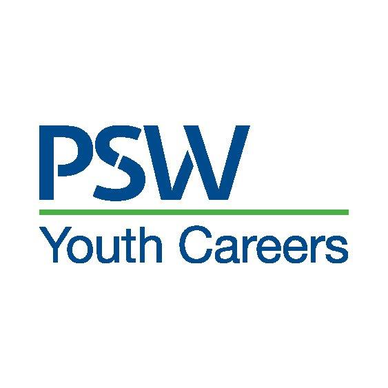

|

PSW Youth Careers, an initiative of Partnerships for a Skilled Workforce, Inc.
PSW Youth Careers focuses on:
Jobs for young people where they gain the skills needed to succeed in the current economy
Technical and social skills necessary to maneuver successfully in today’s workplace
Career pathways through post-secondary education and apprenticeships
Social and professional networks that help youth gain exposure and experience in a variety of work environments
Support services to help those facing barriers overcome obstacles
|